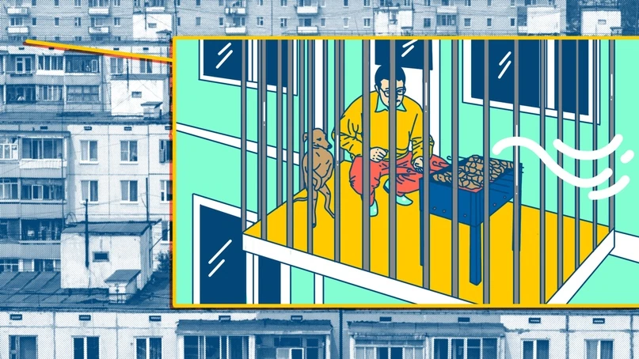
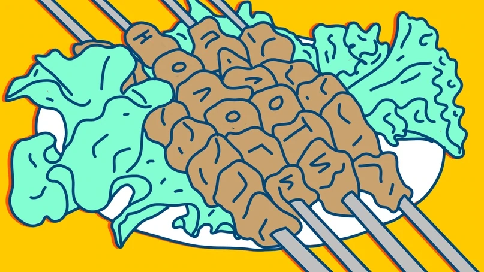

Данила Блюз взглянул на Россию сквозь призму шашлыка и обнаружил, как несвободен, оказывается, его народ. Пока весь мир обжирается вкуснейшим мясом на углях, Россия погрязла в запретах по технике пожарной безопасности.

Шашлык. Это слово пробуждает в душе каждого смертного ностальгию по древним временам, когда он был не офисным рабом, а вольным кочевником, и ездил верхом на верном боевом коне, а не на кресле с колесиками. От запаха же шашлыка встают перед глазами всполохи бивачных костров, усталость после похода и первобытный голод, который может утолить только жареное мясо. Шашлык — это огонь, кровь, сталь — основные элементы, из которых сложена человеческая жизнь. И все они в шашлыке гармонично сосуществуют.
Шашлык — это свобода, для его приготовления не нужна кухня-тюрьма, не нужны столовые приборы, отягощающие человека. Поедая шашлык, мы обращаемся в наших диких предков: жрем мясо руками или прямо с шампура, пачкая лицо, руки и одежду вкусным горячим жиром. Шашлык насыщает не только наши желудки, но и первобытную тягу к насилию, к протыканию вражеского мяса копьем, стрелой или штыком, а запах тлеющих углей напоминает о сожженных вражеских селениях, о грандиозных пожарищах поверженных городов.
Но прошла та эпоха, когда мы были вольны: скакали, куда хотели, разводили костры там, где хотели, и жарили на этих кострах, кого хотели. До недавних пор я наивно полагал, что, как и в древние времена, шашлыки можно делать где угодно. “Это свободная страна, — думалось мне. — Если уж ты изловчился раздобыть здесь кусок мяса, то уж пожарить его не составит никаких проблем!” Но внезапно выяснилось, что моя страна — это не оплот кулинарной свободы, а ГУЛАГ, в котором шашлыки дозволяется есть только в специально отведенных местах!
У меня в квартире здоровенный балкон. Приходите, гляньте — и вы охуеете. Даже целая лоджия, а не балкон. Черт знает, я не силен во всей этой архитектуре. Так вот, однажды я подумал: “А чего бы не пожарить шашлык на балконе? Можно же жарить шашлыки на улице, а чем балкон не улица?” Тем более это все же часть моего дома, а дома я сам себе хозяин и волен делать что захочу! Но нет, оказывается, дома хозяин не я, а пожарная охрана! За разведение огня на балконе или даже на крыше с меня могут содрать штраф в 420 тысяч рублей. А если пламя повредит чье-то имущество или здоровье, то можно схлопотать и тюремный срок в два года.
Что ж, хорошо. Пожалуй, шашлык на балконе — не самая клевая идея. Тогда, наверное, можно выйти с мангалом во двор? На кой черт они еще нужны, эти дворы! Не только ведь для детей с мамашами, дежурящих днем, и для алкашей, бдящих ночью? Они нужны, чтобы укреплять местное комьюнити жильцов, чтобы люди проводили совместно время на воздухе, тусовались, играли в шахматы, обсуждали политику, ремонтировали с мужиками свои старые “Жигули”. Ну а что может способствовать сплочению больше, чем совместное приготовление шашлыка?! Да ничего!
Но полиция не дремлет и здесь. Выясняется, что разводить костры во дворе тоже запрещено! Так же как запрещено это делать в скверах и городских парках, если там нет специально отведенных мест. Такое место должно находиться в 50 метрах от жилых построек. Обязательно наличие емкости с водой для тушения пожара, да еще и открытый огонь под запретом — значит, готовить можно только на углях. Кроме того, мангал должен быть высотой не менее 30 см.
Ну а что, тогда, возможно, с шашлыком проще обстоят дела на даче, где каждая грядка насквозь пропитана кровью и потом твоих деда с бабкой? Уж тут-то вы по праву престолонаследия можете хоть ведьм сжигать, не то что куриные окорочка.
Ан нет, в частных домах и на садовых участках тоже нужно соблюдать правила техники безопасности и оборудовать место для готовки шашлыка так, как я описал выше.

Ладно. Остается последнее прибежище для изголодавшегося странника — мать-природа! Всегда, во все времена все угнетенные, несогласные с властями бежали в леса: Робин Гуд, Дубровский, Буратино и герой песни “Батька-атаман”. Уж в лесу-то нет ни пожарных, ни ментов, ни построек, ни чужой собственности, чтобы я мог ее спалить. Но нет, оказывается, леса — уже давно никакая не разбойничья вольница, они охраняются похлеще городов!
Разводить костер в лесу можно только на специально отведенных площадках, отгороженных от остального лесного массива защитной минерализованной полосой шириной 0,5 метра. Категорически нельзя разводить костры на следующих участках: там, где растет молодой хвойный лес, где деревья повреждены, и на гарях, где имеются остатки древесины или сухая трава, а еще — под кронами. Ну то есть практически везде.
Кроме того, в каждой области нашей Родины региональные органы власти могут вводить особый противопожарный режим, когда полностью запрещено не только разведение костра, но и посещение лесов. В прошлом году на моей памяти в местных СМИ чуть ли не каждую неделю объявляли о таком режиме.
И где же она, эта ваша свобода, если ты не можешь в свое удовольствие пожарить мясо на свежем воздухе? Для этого тебе нужно запираться в какой-то специальный шашлычный концлагерь и там за решеткой переворачивать шампуры. Или идти в дорогущий кабак к местному Мцыри и грызть там печеное лошадиное копыто, запивая его ослиной мочой вместо пива. Пока весь Кавказ уплетает шашлыки за обе щеки, пока американцы могут поставить барбекюшницу в любом месте планеты, и им ничего за это не будет, пока арабы и негры в Париже жарят свои кебабы на углях тлеющего Нотр-Дам, мы, русские, вымираем, давясь чебупелями из микроволновки!